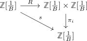

Reißverschluss-Bijektion von ℤ adjungiert B^{-1}
Satz
Sei $\mathbb{Z}[\frac{1}{B}]$ mit der B-Adischen Darstellung von ℤ adjungiert B gegeben. Dann ist:
ein Homeomorphismus
Beweis
welldefined
Nach Annahme ist die Darstellung eindeutig
Bijektion
Folgt aus der evidenten Umkehrabbildung:
Homeomorphismus
stetige / offene Abbildung
Betrachten wir die Komposition o.B.d.A. für $\pi_1$ mit der Projektion:

Wir erhalten die Abbildung:
Diese Abbildung erhält in beide Richtung die lineare Ordnung, da für $k = \sum_{i \in \mathbb{Z}}^{} x_i B^i, k' = \sum_{i \in \mathbb{Z}} x_i' B^i$ mit $k < k'$ folgt:
Seien $k,k'$ mit $k < k'$ gegeben, so gilt wegen der Vorbemerkung für $s[(k,k')] = (f(k),f(k'))$ und analog auch $f^{-1}[(k,k')] = (f^{-1}[k], f^{-1}[k'])$
Damit sind beide Komponenten von $R(k)$ offen, d.h. $R$ ist eine offene Abbildung und ferner ist die Verknüpfung mit $\pi_i$ stetig, d.h. auch $R$ ist stetig